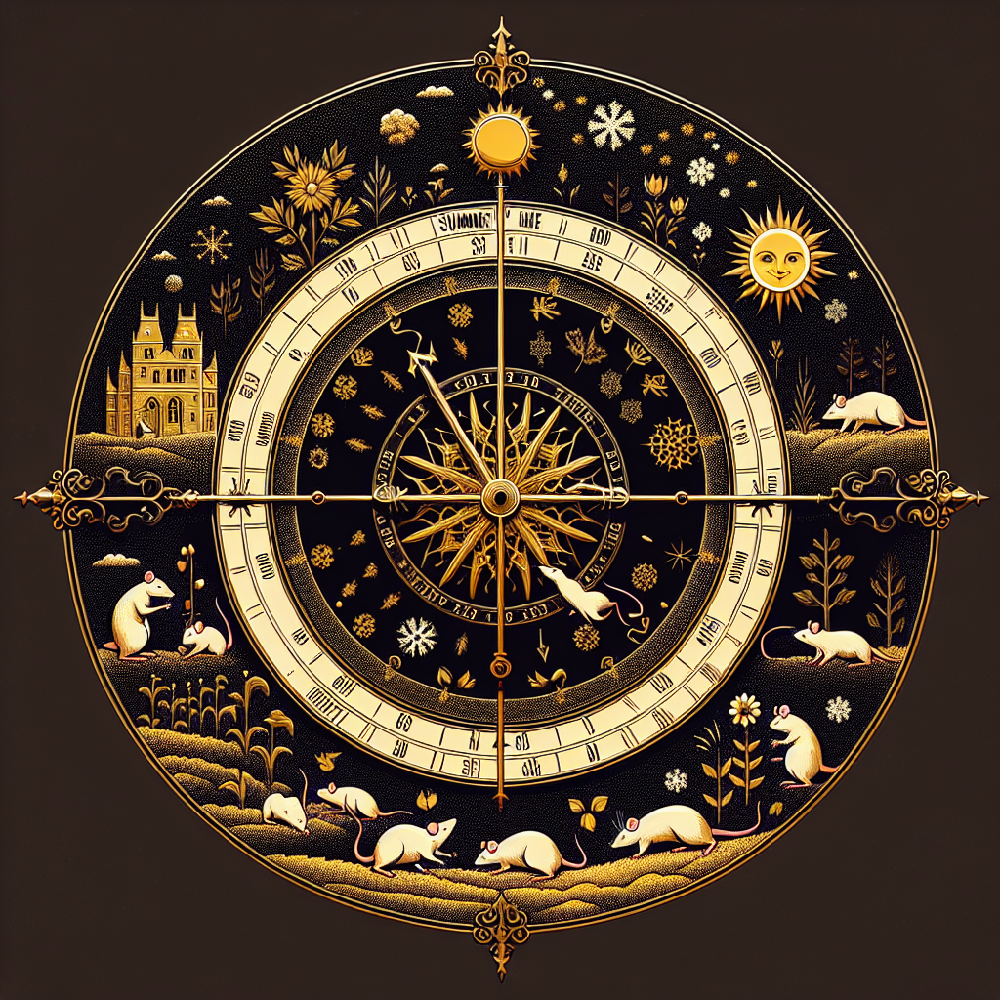

Paws for Impact: How Climate Change is Altering Ratopolis’ Seasons
Unpredictable weather patterns are disrupting Ratopolis, with warmer winters, erratic rainfall, and extended summers shaking the usual seasonal cycles. As experts sound alarms, environmental leaders call for immediate action to secure our city’s future.

Ratopolis, known for its consistent seasons, is now experiencing unusual weather. Winters are milder, summers are longer, and rainfalls are erratic. These changes are linked directly to climate change.
Dr. Squeak Greenpaw, an environmental scientist, explains, "Global climate trends are altering our local weather. What we’re seeing in Ratopolis is part of a bigger environmental crisis."
A recent study reveals startling findings. Winters are warming, affecting hibernation cycles. "I've lived in Ratopolis my whole life, and I've never seen winters this mild," notes Remy Whiskers, a local historian. "It’s like the seasons are playing a game of hide and squeak!"
These shifts have direct impacts on daily life. Farmers, like Bella Cheddar, face disrupted planting and harvesting schedules. "The unpredictable weather is making it hard for us farmers. We need to adapt quickly, or our crops will suffer," says Bella.
Health concerns are also rising. Increased heat leads to more heat-related illnesses. Pests that thrive in warmer climates are becoming more common, straining healthcare resources.
"Our clinics are seeing more cases of heatstroke and pest-related illnesses," reports Dr. Nina Furrow, a city health officer. "It’s worrisome and requires immediate attention."
Infrastructure in Ratopolis is under stress. Unpredictable rainfall causes flooding, while heatwaves push the city’s cooling systems to their limits. "We’re seeing more wear and tear on city infrastructure than ever before," states Rico Ratchet, a city planner.
Despite these challenges, resistance to change exists. Some residents believe weather patterns fluctuate naturally and that climate change isn't the issue. "We've had odd weather before," says Skeptic Scurry, a local merchant. "Why panic now?"
Experts counter that this isn’t normal. "The data is clear," insists Dr. Greenpaw. "These changes are unprecedented and dangerous."
Looking ahead, future projections are grim without immediate action. Longer summers could lead to droughts. Warmer winters might disrupt local ecosystems.
Environmental leaders advocate for sustainability efforts. “We must act now to protect our city. The future of Ratopolis depends on our commitment to sustainability,” argues Dr. Greenpaw.
Initiatives are being introduced. Community groups are organizing tree-planting events and clean energy workshops. “We’re small, but our actions can make a big difference,” says Mayor Whiskerstein. “Let’s work together for a thriving future.”
As the climate crisis unfolds, the call to action grows louder. Every rat has a role in safeguarding Ratopolis. “We need to adopt eco-friendly habits and support local sustainability projects,” encourages Bella Cheddar.
In conclusion, the changing seasons are a wake-up call. Climate change is impacting our beloved city in profound ways. Immediate action is vital. As residents of Ratopolis, our combined efforts will determine our city's fate. Let’s paws for impact and usher in a sustainable future together.